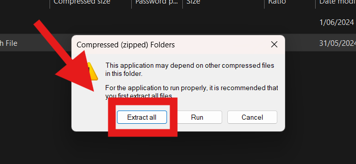
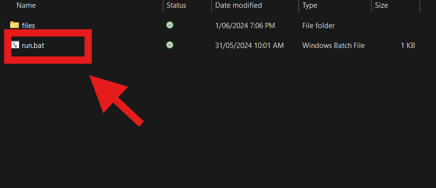

Welcome to BatEditor!
BatEditor is a free batch to app editor with a couple added commands, a standard app will usually look like this:
BatEditor is a node.js program so make sure you have the latest version of node.js.
Install node.js here!
Usage Process
First go to the downloads page and click download on BatEditor1.5.
Once it has downloaded you will have to extract the program before running it(it may take a while)

Once done extracting click on the 'run.bat' file to start the program.

It should come up with the program.
If you want to you can click compiler then select test.bat1, it should be located in: Where ever you saved the files/BatchAppEditor/files/test.bat1
The page should turn into this:
You can also download this code here and save it into the place where the 'test.bat1' is saved. YOU MUST SAVE THE FILE AS '.bat1' OR IT WILL NOT RENDER.
Commands:
margin 0px; - changes the margin of the page(change the 0 to whatever number)
bc red; - Changes the background color(Change red to whatever you want)
dc white; - Changes the document color(Change white to whatever)
df monospace; - Changes the document font(Recommend looking at html fonts)
navbar color bc width height value; - Adds a navigation bar at the top of the screen(Change color(textcolor) to red or white or etc , Change bc(Backgroundcolor) to red or white or etc, Change width to something like 100% which is Recommended, Change height to something like 50pt which is Recommended, change value to change what is inside of the navbar)
LRGech Welcome!; - Adds a big text
echo This is your first code on BatConverter!; - Adds a small text.